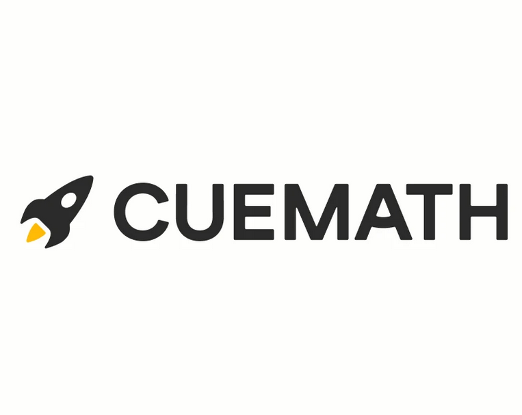

I am Vatsalya Anand, currently pursuing a Master's degree in Data Science at the University at Buffalo. My educational journey began at BITS Pilani in India, where I laid a strong foundation for my career. With 1.5 years of hands-on experience as a Data Scientist at Wipro and an enriching internship at Cuemath as a Data Analyst, I have gained valuable insights into the field.
Passionate about the intersection of data and technology, my interests revolve around Machine Learning, MLOps, and Deep Learning. I am dedicated to staying abreast of the latest advancements in these areas to contribute meaningfully to the industry.
Outside of work and academia, I find solace in traveling and embarking on long drives. These experiences not only rejuvenate me but also provide valuable perspectives that I bring to my professional endeavors.
Explore My
Experience
Data Scientist
July 2021 – December 2022
,
Spearheaded the implementation of predictive models, employing cutting-edge algorithms including decision trees
and neural networks in R and Rattle. Achieved significant cost reduction in cold calling operations.
Pioneered the development of automated visualization dashboards, seamlessly integrating BI tools such as Power BI
and ServiceNow. This innovation streamlined workflows, eliminating manual interventions and enhanced business.
Innovatively engineered a Python-based web scraper to efficiently extract data from internal websites. Designed and
implemented a robust ETL process to seamlessly load extracted data into Microsoft SQL servers, optimizing data
management and accessibility

Data Analyst Intern
July 2020 – December 2020
,
Conducted in-depth analysis of Funnels, Uninstalls, and Retention Cohorts using a combination of Python and SQL
(Redshift), extracting actionable insights to drive strategic decision-making.
Spearheaded the integration of Big Query with CSV files stored in Buckets on the Google Cloud Platform,
architecting new table schemas. This initiative optimized data storage and accessibility, contributing to streamlined
data management processes.
Applied advanced web scraping techniques using Selenium in Python to extract Daily Active Users (DAU) and
Monthly Active Users (MAU) data from AppsFlyer. Leveraged pandas dataframes to generate comprehensive
reports, providing valuable metrics for performance evaluation and strategic planning.
Explore My
Education
University at Buffalo
Master of Science in Data Science
January 2023 – May 2024
Birla Institute of Technology and Science Pilani
Bachelors of Engineering
August 2017 – July 2021
Browse My Recent
Projects
Fake News Detection
Python, Flask
Engineered and implemented an effective fake news detection model using NLP and deep learning (CNNs,
Bi-LSTMs), showcasing strong skills in Python programming and data preprocessing.
Optimized and fine-tuned the model for superior performance, culminating in the successful integration into a
user-friendly web application using Flask. This implementation allowed users to assess the authenticity of news.
Analysis of Traffic Stop Receipts
Python, SQL, Flask
Applied advanced SQL operations in PostgreSQL to analyze traffic stop data, revealing key patterns and trends
through statistical analysis, enhancing data-driven decision-making in law enforcement.
Leveraged Flask and Python to construct a dynamic web app seamlessly integrating with PostgreSQL. The
interface allows stakeholders to efficiently access and visualize traffic stop data.
Mean Areal Computation of Rainfall
Python, Pandas
Developed a Python-based automation system utilizing Pandas DataFrames and GeoPandas GeoDataFrames for
efficient computation of Mean Areal Rainfall, showcasing proficiency in data manipulation and spatial analysis.
Implemented visualization components to represent Mean Areal Rainfall patterns, enhancing data interpretation
and providing valuable insights.